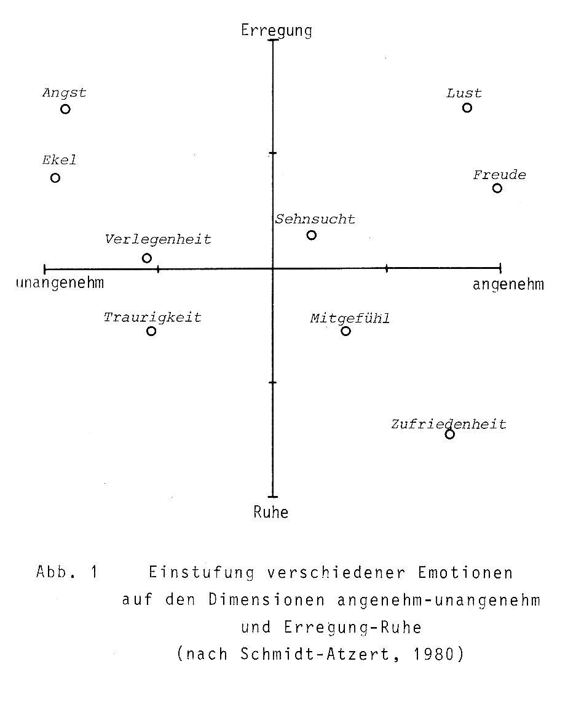

Willkommen auf dem Lernportal für Musik und Emotionen
Hier können sie mehr über die Themen Musik, Emotionen und deren Verbindung erfahren. Dabei können sie Musikbeispiele anhören, interaktiv testen wie einzelne Instrumente Einfluß auf ein Musikstück haben und wie man den Eindruck eines Videoclips total vertauschen kann, dank der passenden Musikuntermalung.
Was sind Emotionen
psychische Erregung, Gemütsbewegung; Gefühl, Gefühlsregung (Duden)
Eine präzise wissenschaftliche Definition für den Begriff „Emotion“ gibt es nicht, da er von vielen wissenschaftlichen Bereichen erforscht wird, darunter Psychologie, Philosophie und Neurowissenschaften.
Im Gegensatz zum Gefühl sind Emotionen als ein Affekt − vom agierenden Individuum aus gesehen − meist nach außen gerichtet. Der Begriff Affekt betrifft im deutschen Sprachgebiet eine oftmals mit einem Verlust der Handlungskontrolle einhergehende kurzfristige emotionale Reaktion.
Gleichermaßen sind Gefühle, Emotionen, Stimmungen ein Teil zwischenmenschlicher Kommunikation, aber auch nonverbaler Kommunikation. Sie begleiten im Wahrnehmen das Erkennen, z. B. im Fühlen einer Evidenz. Auch die Intuition, der zunächst noch Erkenntnisschritte fehlen, beruht im Wesentlichen auf einem gefühlsmäßigen oder emotionalen Erfassen.
Was machen Emotionen mit uns
Da es ein einheitliches Ausdrucksverhalten von Emotionen nicht gibt, werden meist Gesichtsausdrücke und Körperhaltung als Ausdruck von Emotionen betrachtet (ferner noch Musik, Malerei oder sogar Fingerdruck). Hier kann man beobachten, dass klassische Ausdrucksformen wie Lächeln bei Freude, Nase rümpfen bei Ekel, Hochziehen der Augenbrauen bei Angst etc. über alle Populationen stabil sind. Die Gesichtsausdrücke von Steinzeitmenschen aus Neu-Guinea werden ebenso richtig identifiziert, wie die Gesichtsausdrücke von Neugeborenen, welche gar keine Zeit haben konnten, die gezeigte Mimik zu lernen. Dies suggeriert, dass eine genetische Komponente für den Ausdruck von Emotionen verantwortlich sein könnte.
Außer dem sichtbaren emotionalen Ausdruck gibt es noch physiologische Reaktionen. Zu diesen zählen bekannte Dinge wie Herzklopfen bei Verliebtheit, Erröten bei Scham, der sprichwörtliche Kloß im Hals und Feuchtwerden der Hände bei Angst und Ekel und vieles mehr. Als wissenschaftliches Messinstrument wird in vielen Untersuchungen noch die Hautleitfähigkeit hinzugenommen. So konnte gezeigt werden, dass es zwar viele Überschneidungen zwischen erlebten Gefühlen und den entsprechenden körperlichen Reaktionen gibt, diese aber keineswegs perfekt sind. Die Untersuchungsergebnisse zeigen, dass es nicht nur „allgemeine Angst und Traurigkeit“ etc. gibt, sondern ausgeprägte Symptomprofile vieler Emotionen.
Wie entstehen Emotionen

Laut Schmidt-Atzert (1982) lassen sich alle Gefühle auf einem zweidimensionalen Raster aufzeigen, wobei die beiden Dimensionen Valenz (also angenehm/unangenehm) und Arousal (also erregt/ruhig) darstellen. Dies wird in Abbildung 1 verdeutlicht. Da verschiedene Emotionen von Menschen auch verschieden bewertet werden, sind die abgetragenen Punkte als Mittelwertsdarstellungen von vielen Befragten zu verstehen.
Fragen zum Thema Emotionen
Scham
Zufriedenheit
Lust
Angst
zweitrangig hinter verbalen Äußerungen
erlernte Handlungsweisen, die sich erst ab dem 6. Lebensjahr zeigen
stark kulturabhängig
über alle Kulturen und Altersgruppen stabil
ist ein eindeutiges Anzeichen für nur eine bestimmte Emotion
kann zwar leicht gemessen werden, ist aber nicht eindeutig einer Emotion zuzuordnen
ist in jedem Fall pathologisch und sollte dringend untersucht werden
keine Antwort ist richtig
Messung der Hautleitfähigkeit
Bloße Beobachtung
Blutzucker
Alle Antworten sind richtig
sie schon früh das Verhalten Erwachsener kopieren
sie im Mutterleib geübt haben
sie auf einer Intelligenzstufe mit Steinzeitmenschen aus Neu-Guinea sind
eine genetische Komponente beteiligt sein muss
Ergebnis
Musik und Emotionen
Musik in der Wissenschaft
Man ist sich einig, dass sich Musik lustig oder traurig anhört, ob dies Emotionen aber auch tatsächlich auslöst, ist umstritten. Und selbst unter denen, die es bejahen, wird diskutiert, welcher Art diese Emotionen sind. (Schellenberg & Hunter, 2010)
Man unterscheidet zwei Vertreter der Emotionsforschung:
- Kognitivisten: Affektive Antworten von Hörern stammen von der Evaluation der Musik und nicht von der Musik selbst (Kivy, 1980, 1990, 2001). Menschen nennen Musik "traurig" oder "fröhlich", weil diese Fröhlichkeit und Traurigkeit ausdrückt, nicht, weil die Musik sie traurig oder fröhlich macht. Entstehende Gefühle seien somit eher außermusikalischer Natur, z.B. Wut darüber, dass der Nachbar nachts laute Musik hört, obwohl man schlafen möchte.
- Emotivisten: Musik löst tatsächlich Emotionen aus, die kognitive Beurteilung zu erklären, ist jedoch schwer (Davies 2001). Manche behaupten sogar, eine Beurteilung fände gar nicht statt, sondern es handele sich um eine sympathische Reaktion (Ridley, 1995; Levinson, 1996). Davies argumentiert, durch Musik transportierte Gefühle wirkten "ansteckend", so wie gewöhnliche soziale Interaktion mit besonders fröhlichen oder deprimierten Menschen.
Musik als Auslöser für Emotionen
Chills
Chills sind die stärkste emotionale Antwort auf Musik. Man spricht allgemein von einer "tingling sensation", welche die Mehrheit der Population bereits einmal erlebt hat. Mit "Chills" befasst sich ebenfalls ein Item des Big Five Personalit Inventory. Dieses ist bester Prädiktor für die Dimension "Offenheit für Neues" (McCrae, 2007).
PET-Studien zeigten, dass "chillige" Musik bestimmte Belohnungszentren im Gehirn aktiviert, eine Wirkung, ähnlich der von Kokain. Die meisten Beschreibungen des Gefühls besagen, es konzentriere sich auf den Nacken und die obere Wirbelsäule, während andere behaupten, es breite sich in die Beine aus. Außer erhöhter Hautleitfähigkeit gibt es aber keine anderen physiologischen Reaktionen.
Warum "chills" nur bei Exposition gegenüber Musik und anderen ästhetischen Eindrücken vorkommen, ist bis heute unbekannt.
Musikgeschmack
Konsonanz ist ein basaler Einfluss darauf, ob man Musik mag, Dissonanz bewirkt meist das Gegenteil, unabhängig von Alter und kulturellem Hintergrund. Vertrautheit ist ein weiterer wichtiger Einfluss, wobei Übervertrautheit dazu führt, dass man die Musik nicht mag.
Letztendlich präferieren Hörer fröhliche über traurige Musik, wobei sie sich häufig aktiv dazu entscheiden, traurige Musik zu hören, vor allem, wenn sie bereits traurig oder müde sind. Menschen aller Altersgruppen gaben in Erhebungen an, häufig bestimmte Musik auszuwählen, um eine bereits vorhandene Stimmung zu verstärken oder gezielt zu ändern.
Emotional ausdrucksstarke Sprache und Musik haben viele Gemeinsamkeiten. Erforscht wurde dies von Bowling, Sundararajan, Han, & Purves, 2012 beim Vergleich von Englisch und Tamil, bzw. westlicher und süd-indischer Musik. Wütende Sprache bspw. ist geprägt von hoher vokaler Intensität, so wie wütende Musik (etwa Heavy Metal) meist laut ist. Emotionen mit hohem arousal (Wut, Angst, Fröhlichkeit) werden meist schneller ausgedrückt als Emotionen mit niedrigem arousal (Traurigkeit, Zuneigung/Liebe). Weiterhin hat fröhliche Sprache größere Intervalle in der Tonhöhe, ebenso wie fröhliche Musik. Niedrigere Tonhöhen lassen Musik weniger angenehm klingen, so wie auch niedrige Tonhöhen verwendet werden um Emotionen negativer Valenz auszudrücken. In der Sprache haben Emotionen wie Angst und Zorn eher höhere Tonhöhen.
Juslin and Västfjäll (2008) argumentieren derweil, dass es noch weitere Mechanismen gibt, die eine emotionale Antwort provozieren können, ohne dass eine Kognition nötig wäre. Sie zählen insgesamt 6 mögliche Ursachen:
1. automatische Hirnstammreflexe gegenüber lauten, unerwarteten oder dissonanten Geräuschen
2. evaluative Konditionierung durch vergangene positive oder negative Ereignisse, bei denen die Musik gehört wurde
3. emotionale Ansteckung, also dass die wahrgenommene Emotion auch erlebt wird
4. mit Musik assoziierte visuelle Stimuli
5. Verbindungen zwischen episodischem Gedächtnis und einem bestimmten Stück
6. Verletzung der Erfüllung musikalischer Erwartung
Auch wenn Juslin und Västfjäll (2008) behaupten, dass diese Mechanismen kognitive Bewertung umgehen, sind geistige Symbolik und episodisches Gedächtnis nicht unabhängig von Kognitionen (Konečni, 2008)
Messung von Emotionen
Musik variiert in mehreren Dimensionen (Tempo, Modus, Lautstärke, Tonhöhe), welche alle emotionale Antworten beeinflussen. Diese Unterschiede können bereits von 5-jährigen Kindern aller Kulturen identifiziert und benannt werden. In den meisten Studien beschränkten sich diese Antworten aber häufig auf Fröhlichkeit und Traurigkeit, sehr viel seltener Angst oder Zorn. Diese Emotionen werden fast ausschließlich genannt, wenn der Stimulus speziell für diese Emotion designed wurde.
Dass Charakteristiken von Musik Emotionen hervorrufen können, ist bekannt, wie sie das tun, muss noch erforscht werden. Standardisierte affektive Musikstücke (wie vorgeschlagen von Viellard et al. 2008), könnten dabei helfen.
Messung - Durch Selbstauskunft (behaviorale Maße)
+ valide und reliabel + leicht interpretierbar + billig
- Physiologische Maße (Puls, Blutdruck, etc.)
+ Messen arousal - Messen keine Valenz +/- Gesichtsmessung (zygomatische Aktivität) + Cortisol-level Messung auch bei Kleinkindern möglich
- Neurologische Maße
+ Messen positive/negative Antworten - Messen keine spezifischen Emotionen
- Patienten mit Hirnschäden
+ Zeigen Zusammenhang von Musik und Amygdala-Aktivität - Bisher zu wenige Studien
Klangbeispiele in Bezug der Strebetendenz-Theorie
Um die in der Strebetendenz-Theorie dargestellten emotionalen Charaktere praktisch darzustellen, folgen hier ein paar Musikbeispiele. Der Text unter den Beispielen verrät den Charakter, wer also zunächst selbst zuordnen möchte, sollte demnach den Text erst später lesen. Zudem sind die Musiksequenzen unterteilt worden in Instrumentengruppen, um zudem die Möglichkeit zu geben, herauszufinden, welche Facetten des Stücks wie musikalisch bedient werden und wie sich das Klangbild des Stückes verändert, wenn man bestimmte Instrumente weglässt. Was sorgt für Dynamik, was für den tragenden Charakter? Somit ein praktisches Beispiel, die Charaktere selbst zu testen und abzugleichen.
Klangbeispiel: Revenge
Abspielen
Diese Sequenz bietet ein Beispiel für Äolisches Moll. Der damit verbundene emotionale Charakter ist Abenteuer, Spannung, eine schwierige Situation, Mut sowie unerfüllte Sehnsucht und das Streben danach. Auch hier spielt die Subdominante eine Nebenrolle im Streichersatz und gibt eine Note des Wehmuts hinein. Das Staccato der Streicher sorgt zudem für eine weitere Dynamik neben der Percussion. Die in der Strebetendenz beschriebenen Sekundreibungen haben auch hier Anwendung gefunden und heben die Spannung.
Klangbeispiel: Rad der Zeit
Abspielen
Diese Sequenz liefert ein Beispiel für die Subdominante in Dur mit großer Septime. Der hiermit verbundene emotionale Charakter nach Kurth und Willimek wäre Wehmut, Abschied und Sehnsucht. Die Staccato Strings betonen den Charakter der Subdominante mit der großen Septime, jedoch auch der Tonika mit großer Septime und unterstützen die Dynamik wie im Klangbeispiel zuvor. Zudem spielt die Unbefangenheit der Tonika in Dur hinein, was das Klangbild einen schwebenden, leichten Charakter verleiht.
Klangbeispiel: Shelter
Abspielen
Die letzte Sequenz bietet ein Beispiel für die Subdominante in Dur mit großer Septime. Der emotionale Charakter hierzu wäre Geborgenheit, Warmherzigkeit, Wärme – durch den Anteil der Septakkorde des Stücks spielt zudem Aufmüpfigkeit und Stärke wieder. Durch die Dominantwechsel gewinnt das Stück zudem an Bewegung und dem Streben voran. Optional wurde diesmal der Gesang hinzugeschaltet, wessen Text das Konstrukt des emotionalen Charakters noch stützt.
Fragen zum Thema Musik und Emotionen
Das plötzliche Abkühlen der Haut beim Hören von Musik, die man nicht mag
die körperliche Antwort auf eine Reizung des Belohnungssystems im Gehirn
Eine plötzlich auftretende Müdigkeit beim Hören von Reggae
Eine körperliche Unruhe, die auftritt, wenn man ein Instrument hört, das man selbst beherrscht
sie sich alle Musikrichtungen gleich gern anhören
Es sehr viele Studien über sie gibt, welche sich leicht vergleichen lassen
sie beim Musikhören seltene Enzyme produzieren, die gesunde Menschen nicht haben
man in bildgebenden Verfahren eher Zusammenhänge zwischen Emotionen und bestimmten Hirnregionen (z.B. Amygdala) sehen kann
ein Begriff aus der Animation, der verdeutlicht, wie dynamische visuelle Elemente mit Musik unterlegt werden
ein von Werner Herzog geprägter Begriff für die Tänze indigener Völker
die Aktivierung zweier Hirnareale, die im fMRT wie Mickey-Maus-Ohren aussehen
ein Begriff aus dem Film Noir, der verdeutlicht, dass schwarzweiß Filme einen trotzdem zum Lachen bringen können, unabhängig vom behandelten Thema
muss der Hörende vor dem Hören einem traumatischen Ereignis beigewohnt haben
muss der Hörende eine hohe Ausprägung von „Neurotizismus“ aufweisen
muss das entsprechende Musikstück meistens speziell dafür designed sein
keine der Antworten ist richtig
affektive Antworten auf Musik nicht von der Musik selbst ausgelöst werden
physiologische Antworten auf Musik meistens von der Musik selbst ausgelöst werden
psychopathische Antworten auf Musik ausschließlich von Musik ausgelöst werden
paranormale Antworten auf Musik auch von Musik ausgelöst werden können
Ergebnis
Musik
Grundlagen
Um den Ausführungen der Strebetendenz-Theorie folgen zu können, welche den Zusammenhang zwischen Musik und Emotionen erklären sollen, sind ein paar
musiktheoretische Grundlagen erforderlich. Vor allem ist es wichtig die Substanz bestimmter Harmonien zu verstehen, die im Folgenden erläutert werden.
Alle Kadenzen – bestimmte Abfolgen von Akkorden – können auf verschiedenen Tonleitern, auch benannt als Skalen, begonnen werden und entwickeln so ihren
eigenen Klang. Und um diese bestimmten Klänge und was sie in uns auslösen und warum soll es bei den weiteren Kapiteln gehen.
Die Kirchentonleitern (Modi)
Die Kirchentonleitern haben einen sehr hohen Stellenwert in der Musiktheorie. Auf ihnen bauen sich die Grundtonarten auf, die in
unserer westlichen Musik Anwendung finden. Bevor ich auf den Aufbau der Kirchentonleitern eingehe, möchte ich ein paar Begriffe vorab klären.
Ein Intervall bezeichnet den Abstand zweier Töne zueinander. Geht man die Intervalle von einem bleibenden Grundton aus durch, trägt
jeder Halbton aufwärts des Grundtons eine feste Bezeichnung. Auch hier ist es irrelevant, von welchem Ton aus man startet.
Eine Skala oder Tonleiter besteht aus einer bestimmten, festgelegten Abfolge von Halb- und Ganztönen, unabhängig davon,
von welchem Ton aus man startet. Eine Darstellung der Skalen folgt weiter unten. Jeder folgende Tonschritt vom Grundton aus gesehen
wird auch als Stufe bezeichnet. Betrachten wir als Beispiel die C-Dur Tonleiter (Ionisch).
Eine Kadenz bezeichnet – knapp formuliert - eine bestimmte Abfolge von Akkorden bezogen auf eine Grundtonart. Die wichtigsten Stufen einer
Kadenz sind hierbei
die I. Stufe (T -Tonika), die IV. Stufe (S - Subdominante) und die V. Stufe (D - Dominante). Eine Kadenz bestehend aus diesen Akkorden ist zur Verdeutlichung dargestellt.
Kadenzbeispiel ÄolischKadenzbeispiel Ionisch
Die Kirchentonleitern werden aus den Grundtönen der C-Dur Tonleiter abgeleitet, wie in der Abbildung gezeigt wird. Jede Tonleiter bildet sich aus einer
bestimmten Abfolge aus Halbtönen und Ganztönen. Dies lässt sich anhand einer Klaviatur am besten sehen.
Ein Halbton ist immer die nächstliegende Taste der Klaviatur – ein Ganzton sind demnach zwei Halbtöne. Die C-Dur-Tonleiter wird nur auf den weißen Tasten gespielt –
so bildet sich die Ionische Tonleiter.
GT – GT – HT – GT – GT – GT – HT
Möchte man nun eine andere Tonleiter verwenden, nehmen wir als Beispiel die Dorische, startet man von D und schaut sich an, wo die Halbtöne liegen, wenn man
von D beginnend die weißen Tasten hinauf wandert. So würde sich ergeben:
GT – HT – GT – GT – GT – HT - GT
Bildet man nun die Dreiklänge über die einzelnen Töne einer bestimmten Skala, ergibt sich ein charakteristisches Klangbild einer jeden Skala. Manche dieser Klangbilder
sind Moll-orientiert (Dorisch, phrygisch, äolisch) und manche sind Dur-orientiert (ionisch, lydisch, mixolydisch). Bildet man, wie im Beispiel der Kadenz angegeben wurde,
eine Tonika – Subdominante – Dominante – Tonika Verbindung, so wird sich dieser Klang auf verschiedene Skalen bezogen
gänzlich anders anhören und in uns andere Gefühle und Emotionen wecken.
Hier sind nun die Klangbeispiele der eben beschriebenen Kirchentonleitern, alle beginnend auf C,
um die unterschiedlichen Klangcharaktere zu verdeutlichen.
MixolydischPhrygischLydischLokrischDorischIonischÄolisch
Strebetendenz-Theorie
Die Strebetendenz-Theorie beschäftigt sich mit der Wirkung von bestimmten Harmonien und Akkordfolgen auf
die Emotion des Menschen. Woran liegt es, dass manche Musikstücke uns fröhlich stimmen, andere traurig und wiederrum andere uns motivieren? Was
passiert mit unserer Wahrnehmung und was nehmen wir überhaupt wahr und wieso verleitet es uns dazu, eine Emotion diesbezüglich aufzubauen. Ernst
Kurth entwickelte erstmals eine Vorversion der Strebetendenz-Theorie in seiner Diplomarbeit 1987 mit dem Titel „Das musikalische Raumphänomen.“
Erst später entwickelte er daraus die Strebetendenz-Theorie, welche er wie folgt beschrieb: „Die Wahrnehmung harmonischer Abläufe als Identifikationen
des Hörers mit Willensvorgängen, die der Strebewirkung entgegen gerichtet sind.“ Bernd Willimek, welcher hier auch zitiert und als Grundlage genommen
werden soll, entwickelte diese Theorie der musikpsychologischen Lehre Ernst Kurths weiter. Sie enthält die weltweit erste Auflistung emotionaler
Charaktere in Bezug auf Musik.
Doch was drückt diese komplexe Beschreibung der Theorie Ernst Kurths nun aus? Grundsätzlich geht es um den Bezug zweier Töne – oder später ausgebaut
in Akkorde – zueinander. Bevor ich auf den musikalischen Bezug eingehen werde, möchte ich ein physikalisches Beispiel bringen, um das Verständnis
des Strebens, von dem hier die Rede ist, näher zu erläutern. Ein Ton wird hier dargestellt, als ein Auto, welches auf einem Hügel steht und abwärts
gerichtet ist und im Sinne der Schwerkraft hinab rollen würde. Die Person im Wagen, die dem bewusst werden würde, wird nun versuchen mittels
Handbremse diesen Vorgang aufzuhalten – oder zuzulassen. Es ist also eine Willensentscheidung sich für oder gegen ein Entgegenstreben zu
entscheiden. Unser Bewusstsein empfindet manche Tonverbindungen als grundlegend angenehm – unabhängig von ethnischer Herkunft und andere
wiederum nicht. Dieses Entgegenstreben wird im musikalischen Sinne ebenso verstanden wie in dem physikalischen Beispiel: Unbewusst strebt
unser Wille nach einer angenehm empfundenen Verbindung und wird diese nicht erreicht empfinden wir – ebenfalls unbewusst – ein Gefühl der
Spannung und einer Willensregung diesen Zustand zu ändern. Ein Ton kann sich selbst nicht entscheiden sich in einen anderen umzuwandeln,
das Gefühl des Hörers vermittelt ihm das Gefühl, als „wolle“ ein Ton sich in einen anderen auflösen um die Spannung zu lösen.
So entsteht der Wunsch sich für einen rein empfundenen Klang zu entscheiden und gegen eine Dissonanz. Dies ist ein Wechselspiel
unbewusster und bewusster Wahrnehmung, wie Willimek beschreibt. Sekundintervalle werden im Allgemeinen als dissonant eingeschätzt
– die Sekundreibung wird innerhalb eines Stücks unbewusst wegen ihrer Dissonanz als Störung empfunden und der Wunsch diese Dissonanz
zu bereinigen verkehrt sich ins Gegenteil und der Hörer identifiziert sich damit den Reibungston weiter zu hören. Ähnliche Umkehrungen
ins Gegenteil sind bspw. im Rahmen der Klinischen Psychologie bei zwangserkrankten Patienten zu finden. Der Zwang wird als unbewusster
Wunsch gesehen – bewusst macht sich der Patient jedoch nur mit dem Willen, dem Zwang zu widerstehen.
Auf Basis dieser Grundkenntnis – der willentlichen Strebewirkung entgegen einer als angenehm empfundenen Kadenz oder Harmoniefolge
– bauen sich alle Charaktere der Strebetendenz-Theorie auf. Analysiert wurden die emotionalen Charaktere der Harmonien, welche in
den Grundlagen der Musiktheorie beschrieben wurden. Da es den Umfang sprengen würde sich mit jeder Einzelnen der Charaktere zu befassen,
wird es ein Beispiel geben, sowie eine Auflistung der emotionalen Charaktere mit Klangbeispielen. Belegt wurden diese in den Testreihen,
die mit Probanden N = 2000 aus Europa, Asien, Australien und Südamerika durchgeführt wurden, um eine interkulturelle Stichprobe zu bekommen.
Hier folgt nun eine Auflistung der emotionalen Charaktere mit Klangbeispielen,
um dies zu verdeutlichen. Es bleibt einem selbst überlassen die musikalischen Beispiele selbst zu interpretieren und die zugewiesene
Charaktereigenschaft zu erkennen.
Äolisches Moll: Mut, Abenteuer, Spannung, Gefahr, Härte, schwierige Situation
Klangbeispiel: Vorspann Tatort (Klaus Doldinger)
Dominante/ Dominantwechsel: Bewegung, Streben, Befreiung
Klangbeispiel: Das Wandern ist des Müllers Lust
Septakkord: Widerstand, Protest, Aufmüpfigkeit
Klangbeispiel: Why don’t we do it in the Road (Beatles)
Septakkord gr. Septime: Wehmut, Weichlichkeit, Abschied
Klangbeispiel: Elton John – Your Song
Subdominante in Dur: Gelöstheit, Überschwang, Freude, Trunkenheit, Sieg, Feierlichkeit
Klangbeispiel: Nationalhymne
Verminderter Septakkord: Schrecken, Verzweiflung, Panik, Entsetzen, Schwermut
Klangbeispiel: Bittendes Kind (Schumann)
Kleine Sexte: Bedrohung, Gefahr, Angst, Beklemmung
Ziel der Testreihen war es, nachzuweisen, dass Musik nicht rein subjektiv bewertet wird wie
angenommen bislang, sondern einen systematischen Charakter hat, der bei diesen Tests erfasst und mit bestimmten harmonischen
Abläufen nachgewiesen werden soll. Beide Tests überschneiden sich mit den behandelten Harmonien und tragen so zur gegenseitigen
Bestätigung bei. Bei der Entwicklung der Testreihen wurde intensiv Musikliteratur studiert quer durch die Epochen und Befragungen
mit Erwachsenen und Kindern durchgeführt. So entstanden zwei unterschiedliche Tests, der Basis Test und der Rocky Test, welche sich
gegenseitig stützten.
Der Basistest wurde als Präferenztest konzipiert, in welchem die Probanden musikalische Sequenzen mit
Emotionen verbinden sollten. Hierzu wurden ihnen kurze Stücke am Klavier vorgespielt, welche lediglich die klanglichen Grundeigenschaften
präsentierten (Lautstärke, Tempo, Harmonien). Diese sollten sie zu in mit Begriffen dargestellten Filmszenen zuordnen. Bspw. Verzweiflung,
Wandern, Einsamkeit, magische Verwandlung und Sommertraum. Der Basis-Test erfasst zudem die Parameter Alter, Geschlecht und musikalische
Betätigung der Probanden.
Der Basis-Test ergab eine Trefferquote von 92,17% bei der Auswahl der Harmonien im Sinne der Strebetendenz-Theorie. Zu bemerken wäre jedoch,
dass es sich hierbei
um eine Stichprobe von N = 23 handelt und demnach weitergehend überprüft werden muss, was später noch erfolgte. Leider liegen hierfür noch
keine verwendbaren Datensätze vor.
Auf Grundlage der im Basis-Test angenommenen Theorie, dass musikalische Harmonien auf emotionaler Ebene gleich
wahrgenommen werden, wurde der Rocky-Test entworfen. Bei diesem Test wurden den Probanden auf CD emotionale Szenen aus einem Märchen vorgespielt,
jeweils mit verschiedener musikalischer Untermalung. Aufgabe des Probanden war es nun, die passendste Version zu wählen, wo die Szene zur
musikalischen Untermalung passt – frei nach eigenem Empfinden. Die musikalischen Unterlegungen wurden nach den Richtlinien der
Strebetendenz-Theorie sorgfältig ausgewählt.
Die Ergebnisse zeigen, dass sich 86,69% der Probanden für die in der Strebetendenz-Theorie als korrelierte Harmonien zu bestimmten Emotionen nachgewiesenen
musikalischen Szenen entschieden haben. Ausgewertet wurde nach verschiedenen Szenen, erfasst wurde wie zuvor Alter, Geschlecht und musikalische Betätigung.
Mit einer Stichprobe von N = 2016 ist dies eine bessere Repräsentation, als der Basis-Test. Es zeigte sich, dass Probanden mit musikalischer Vorbildung eine
höhere Trefferquote aufwiesen (88,1%) als Probanden ohne musikalische Vorbildung (82,95%), doch der quantitative Unterschied zu gering ist, um dies mit
musikalischer Vorbildung zu erklären.
Dies kann heißen, dass die Strebetendenz-Theorie einen Hinweis auf den Zusammenhang zwischen Emotionen und Harmonien geben kann, der in der Wissenschaft
noch nicht ausreichend erklärbar ist. Um eine valide Aussage treffen zu können, wäre aber noch weitere Forschung nötig, sowie die Erweiterung der Stichprobe.
Fragen zum Thema Musik
Mixolydisch
Dorisch
Manisch
Frygisch
Die Strebetendenz beschreibt einen emotionalen Zustand der Anspannung, welcher sich in seiner natürlichen Bestrebung ins Positive (Entspannung) auflösen will.
Die Strebetendenztheorie beschreibt erstmals die emotionalen Charaktere bestimmter Harmonien.
Die Strebetendenz-Theorie wurde 1987 in Zusammenarbeit des Physikers Ernst Kurth und des Psychologen Bernd Willimek entwickelt.
Die Strebetendenz-Theorie möchte beweisen, dass Musik von jedem Menschen subjektiv anders bewertet wird.
Der Rocky-Test zeigt eine Kampf-Szene, welche von den Probanden emotional eingeschätzt werden muss.
Die Ergebnisse des Basis-Tests, als auch des Rocky-Tests zeigen deutlich, dass es nicht möglich ist, einen emotionalen Charakter durch Musik darzustellen, welcher von statistisch bedeutsamer Mehrheit als gleich eingeordnet werden kann.
Aufgabe der Probanden im Basis Test ist es, Titelmelodien den zugehörigen Filmen zuzuordnen.
Die Ergebnisse beider Tests zeigen, dass es eine sehr hohe Übereinstimmung bei der Zuordnung der emotionalen Charaktere gibt, was Belege für die Richtigkeit der Strebetendenz-Theorie liefert.
Ein Intervall bezeichnet den Abstand zwischen zwei Tönen zueinander.
Ein Intervall bezeichnet den Aufbau von zwei Akkorden die hintereinander folgen.
Ein Intervall gibt bei einem Musikstück an, welche Vorzeichen verwendet werden müssen.
Intervalle beschreiben die Zugehörigkeit zu einer Skala (Bspw. einem Modus der Kirchentonleiter) – je nach Tonart ändert sich die Bezeichnung eines Intervalls.
Tonika
Dominante
Subtonika
Subdominante
Ergebnis
Audiovisuelle Anwendung
Musik und Film
Die Geschichte der Filmmusik findet ihren Ursprung im antiken griechischen Amphitheater, als Musik verwendet wurde um Dramen zu begleiten. Dies setzte sich fort mit dem Aufstieg der Oper und des Balletts. In der Neuzeit wurde Musik vor allem als Begleitung für den Stummfilm verwendet, auch, um z.B. vom lauten Filmprojektor abzulenken. Mit der Erfindung des Tonfilms wurde angenommen, Hintergrundmusik würde stören und die Zuschauer von der Handlung ablenken. Als man sie jedoch weg ließ, stellte man fest, dass etwas fehlte. Musik war zu einem elementaren Bestandteil des Films geworden.
Die Wahrnehmungspsychologie hat die kognitive Wirkungsweise von Bild und Musik schon lange erforscht. Es heißt, dass ein Videosignal dreimal so viele Informationen sendet wie ein auditives Signal gleicher Länge. Wegen der Interaktion von visuellem und auditivem Material in Filmen ist aber gerade diese Forschung von Belang für das Verständnis, wie Film und Musik zusammen Emotionen erzeugen.
Ein Grundsatz des Assoziationismus besagt, dass ein Gedanke, der normalerweise von einem anderen begleitet wird, diesen auch in seiner Abwesenheit auslösen kann. In Anlehnung daran könne Musik, welche mit einem bestimmten Gefühl assoziiert wird, dieses reproduzieren, wenn es im Film verwendet wird. Dieser Umstand findet oft im Leitmotiv Anwendung. Das Leitmotiv wird anfangs im Zusammenhang mit den Wünschen und Bedürfnissen des Protagonisten verwendet und erhält diese Bedeutung in Abwesenheit des Protagonisten (z.B. „Imperial march“ aus Star Wars, NANANANANANANANA BATMAN). In der zeitgenössischen Psychologie findet sich vieles vom Assoziationismus wieder in der Theorie der semantischen Netzwerke oder der Aktivierungsausbreitung, welche in den meisten kognitiven Domänen Anwendung finden, Musik eingeschlossen. So entsprechen einige Befunde aus der Musikforschung denen des Assoziationismus der emotiven Körpersprache. Höhere Töne und gesteigertes Tempo werden eher mit positiven Emotionen in Verbindung gebracht – tiefe, langsame Töne mit negativen Emotionen. Diese Zusammenhänge werden bereits früh im Leben erlernt.
Ein weiterer Aspekt von Film und Musik beschäftigt sich mit den strukturellen Beziehungen beider innerhalb der Elemente desselben Mediums und zwischen Mustern von Elementen der zwei Medien. Hier finden bspw. Gesetze der Gestaltpsychologie Anwendung, die durch Nähe, Gleichheit von Bewegung, Ähnlichkeit, etc. Gruppierungsprinzipien erklären. Diese werden zwar häufig auf visuelle Stimuli angewendet, können aber auch auf Musik angewendet werden. Gruppierung ist im Film ein wichtiges Werkzeug um Aufmerksamkeit zu lenken und in Übereinstimmung mit den Gesetzen der Gestaltpsychologie werden auditive und visuelle Signale, die sich miteinander verändern, als „Figur“ wahrgenommen, die sich vor Informationen im „Hintergrund“ bewegt. Diese audio-visuelle Kongruenz ist es, welche die Verarbeitung von Informationen vereinfacht und Aufmerksamkeit lenkt und fokussiert.
Hier ist als Beispiel das sog. „Mickey-Mousing“ zu nennen, eine Technik aus der Animation. Hier werden dynamische visuelle Elemente mit Geräuschen nachgeahmt (z.B. durch ein Pfeifen, wenn jemand durch die Luft fliegt, o.ä.).
Der weiße Hai
Gefahr
Romantisch
Rocky
Bitte schließe das erste Quiz ab, um dieses Video freizuschalten
Motivierend
Lächerlich
Psycho
Bitte schließe das zweite Quiz ab, um dieses Video freizuschalten
Erotisch
Unheimlich
Der Soldat James Ryan
Bitte schließe das dritte Quiz ab, um dieses Video freizuschalten

 Eine Skala oder Tonleiter besteht aus einer bestimmten, festgelegten Abfolge von Halb- und Ganztönen, unabhängig davon,
von welchem Ton aus man startet. Eine Darstellung der Skalen folgt weiter unten. Jeder folgende Tonschritt vom Grundton aus gesehen
wird auch als Stufe bezeichnet. Betrachten wir als Beispiel die C-Dur Tonleiter (Ionisch).
Eine Skala oder Tonleiter besteht aus einer bestimmten, festgelegten Abfolge von Halb- und Ganztönen, unabhängig davon,
von welchem Ton aus man startet. Eine Darstellung der Skalen folgt weiter unten. Jeder folgende Tonschritt vom Grundton aus gesehen
wird auch als Stufe bezeichnet. Betrachten wir als Beispiel die C-Dur Tonleiter (Ionisch).
 Eine Kadenz bezeichnet – knapp formuliert - eine bestimmte Abfolge von Akkorden bezogen auf eine Grundtonart. Die wichtigsten Stufen einer
Kadenz sind hierbei
die I. Stufe (T -Tonika), die IV. Stufe (S - Subdominante) und die V. Stufe (D - Dominante). Eine Kadenz bestehend aus diesen Akkorden ist zur Verdeutlichung dargestellt.
Eine Kadenz bezeichnet – knapp formuliert - eine bestimmte Abfolge von Akkorden bezogen auf eine Grundtonart. Die wichtigsten Stufen einer
Kadenz sind hierbei
die I. Stufe (T -Tonika), die IV. Stufe (S - Subdominante) und die V. Stufe (D - Dominante). Eine Kadenz bestehend aus diesen Akkorden ist zur Verdeutlichung dargestellt.
 Kadenzbeispiel Äolisch
Kadenzbeispiel Ionisch
Die Kirchentonleitern werden aus den Grundtönen der C-Dur Tonleiter abgeleitet, wie in der Abbildung gezeigt wird. Jede Tonleiter bildet sich aus einer
bestimmten Abfolge aus Halbtönen und Ganztönen. Dies lässt sich anhand einer Klaviatur am besten sehen.
Kadenzbeispiel Äolisch
Kadenzbeispiel Ionisch
Die Kirchentonleitern werden aus den Grundtönen der C-Dur Tonleiter abgeleitet, wie in der Abbildung gezeigt wird. Jede Tonleiter bildet sich aus einer
bestimmten Abfolge aus Halbtönen und Ganztönen. Dies lässt sich anhand einer Klaviatur am besten sehen.
 Ein Halbton ist immer die nächstliegende Taste der Klaviatur – ein Ganzton sind demnach zwei Halbtöne. Die C-Dur-Tonleiter wird nur auf den weißen Tasten gespielt –
so bildet sich die Ionische Tonleiter.
GT – GT – HT – GT – GT – GT – HT
Möchte man nun eine andere Tonleiter verwenden, nehmen wir als Beispiel die Dorische, startet man von D und schaut sich an, wo die Halbtöne liegen, wenn man
von D beginnend die weißen Tasten hinauf wandert. So würde sich ergeben:
GT – HT – GT – GT – GT – HT - GT
Ein Halbton ist immer die nächstliegende Taste der Klaviatur – ein Ganzton sind demnach zwei Halbtöne. Die C-Dur-Tonleiter wird nur auf den weißen Tasten gespielt –
so bildet sich die Ionische Tonleiter.
GT – GT – HT – GT – GT – GT – HT
Möchte man nun eine andere Tonleiter verwenden, nehmen wir als Beispiel die Dorische, startet man von D und schaut sich an, wo die Halbtöne liegen, wenn man
von D beginnend die weißen Tasten hinauf wandert. So würde sich ergeben:
GT – HT – GT – GT – GT – HT - GT
 Bildet man nun die Dreiklänge über die einzelnen Töne einer bestimmten Skala, ergibt sich ein charakteristisches Klangbild einer jeden Skala. Manche dieser Klangbilder
sind Moll-orientiert (Dorisch, phrygisch, äolisch) und manche sind Dur-orientiert (ionisch, lydisch, mixolydisch). Bildet man, wie im Beispiel der Kadenz angegeben wurde,
eine Tonika – Subdominante – Dominante – Tonika Verbindung, so wird sich dieser Klang auf verschiedene Skalen bezogen
gänzlich anders anhören und in uns andere Gefühle und Emotionen wecken.
Hier sind nun die Klangbeispiele der eben beschriebenen Kirchentonleitern, alle beginnend auf C,
um die unterschiedlichen Klangcharaktere zu verdeutlichen.
Mixolydisch
Phrygisch
Lydisch
Lokrisch
Dorisch
Ionisch
Äolisch
Bildet man nun die Dreiklänge über die einzelnen Töne einer bestimmten Skala, ergibt sich ein charakteristisches Klangbild einer jeden Skala. Manche dieser Klangbilder
sind Moll-orientiert (Dorisch, phrygisch, äolisch) und manche sind Dur-orientiert (ionisch, lydisch, mixolydisch). Bildet man, wie im Beispiel der Kadenz angegeben wurde,
eine Tonika – Subdominante – Dominante – Tonika Verbindung, so wird sich dieser Klang auf verschiedene Skalen bezogen
gänzlich anders anhören und in uns andere Gefühle und Emotionen wecken.
Hier sind nun die Klangbeispiele der eben beschriebenen Kirchentonleitern, alle beginnend auf C,
um die unterschiedlichen Klangcharaktere zu verdeutlichen.
Mixolydisch
Phrygisch
Lydisch
Lokrisch
Dorisch
Ionisch
Äolisch